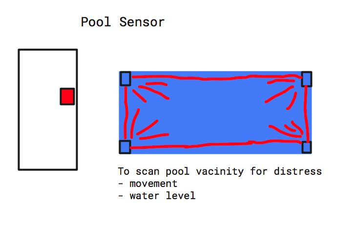

Proposal 2
For the second project of the semester, I would love to explore an idea I had prior to beginning multimedia design. This idea was inspired by an incident that occurred at my previous school a year ago, in which a student drowned due to the supervisors looking away for a few minutes. After conducting further research, I found swimming related fatalities are one of the highest causes of childhood death. I hoped that through design, this could be countered, with a device to send an alert directly to the swim coach as it detects any sign of distress. This could be in the form of individual wristbands or sensors made to scan the entire pool, etc. It is my hope that through this design, further incidents can be prevented.
go to home page